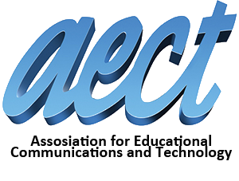

APA SI TEKNOLOGI PENDIDIKAN ITU?
Menurut AECT (2008) Teknologi Pendidikan adalah studi dan etika praktek untuk memfasilitasi pembelajaran dan meningkatkan kinerja dengan menciptakan, menggunakan, dan mengelola proses teknologi yang sesuai dan sumber daya.
Teknologi Pendidikan merupakan perpaduan dari unsur manusia, mesin, ide, prosedur, dan pengelolaannya. Teknologi Pendidikan bersifat abstrak. Dalam hal ini Teknologi Pendidikan bisa dipahami sebagai sesuatu proses yang kompleks, dan terpadu yang melibatkan orang, prosedur, ide, peralatan, dan organisasi untuk menganalisis masalah, mencari jalan untuk mengatasi permasalahan, melaksanakan, menilai, dan mengelola pemecahan masalah yang mencakup semua aspek belajar manusia.
Teknologi Pendidikan juga merupakan suatu cara yang sistematis dalam mendesain, melaksanakan, dan mengealuasi proses keseluruhan dari belajar dan pembelajaran dalam betuk tujuan pembelajaran yang spesifik, berdasarkan penelitian dalam teori belajar dan komunikasi pada manusia dan menggunakan kombinasi sumber-sumber belajar dari manusia maupun non-manusia untuk membuat pembelajaran lebih efektif.
